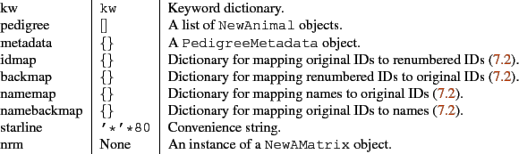
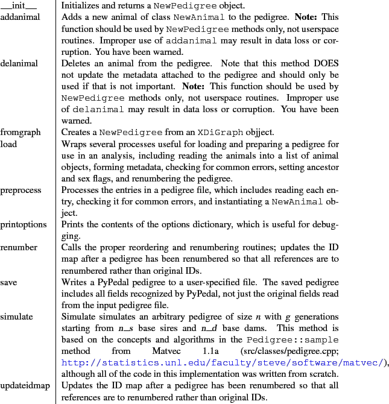

The NewPedigree class is the fundamental object in PyPedal.
Attributes of NewPedigree objects.
Attribute & Default & Description

The methods of NewPedigree objects are listed in Table 6.8. !!!I need to put something in here about pedsources and make sure that it's in the index!!!
Methods of NewPedigree objects.
Method & Description

See Section 3.8 for details on pedigree simulation.
A Manual for use of PyPedal
A software package for pedigree analysis